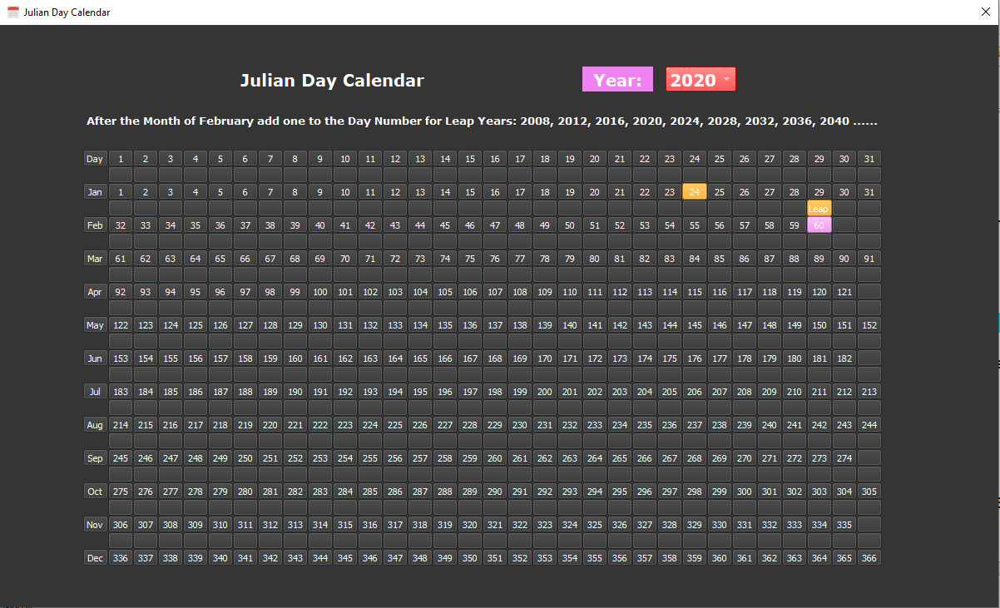

What is new in Ring 1.12?¶
In this chapter we will learn about the changes and new features in Ring 1.12 release.
List of changes and new features¶
Ring 1.12 comes with the next features!
Go Game
ASCII Table application
BMI Calculator application
Calendar application
Julian Day Calendar application
Tutorial: Number to Words
Load Again Command
ring_state_filetokens() function
Embedded Ring Object File
Better RingRayLib
More Improvements


Julian Day Calendar application¶
The Julian Day Calendar application

Load Again Command¶
Ring 1.12 comes with the Load Again command
Using this command we can load the Ring source file which contains constants more than one time.
This is useful when using Ring source files for translations through global constants.
Example:
The next function is part from a project which support Arabic and English languages
The files english.ring and arabic.ring contains constants for translation
One of these files is loaded in the start of the program
Loading the same file again using the (Load) command is not possible
Because the (Load) command load the same source file only for the first time and ignore next times.
So we have to use the (Load Again) command.
Where we can use these files again during the runtime as in the next code
func setLang nLanguage
if C_ENV_DEFAULT_LANG = nLanguage
return
ok
C_ENV_DEFAULT_LANG = nLanguage
# Change the language
switch nLanguage
on C_TRANSLATION_ENGLISH
load again "translation/english.ring"
on C_TRANSLATION_ARABIC
load again "translation/arabic.ring"
off
ring_state_filetokens() function¶
Using the ring_state_filetokens() function we can get all the tokens in the ring source code file.
C_FILENAME = "test_tokens.ring"
C_WIDTH = 12
# write the file
write(C_FILENAME,'
see "Hello, World!"
? 3*2+3
Name = "Ring"
? Name
')
# Token Type
C_KEYWORD = 0
C_OPERATOR = 1
C_LITERAL = 2
C_NUMBER = 3
C_IDENTIFIER = 4
C_ENDLINE = 5
# Keywords List
aKEYWORDS = ["IF","TO","OR","AND","NOT","FOR","NEW","FUNC",
"FROM","NEXT","LOAD","ELSE","SEE","WHILE","OK","CLASS","RETURN","BUT",
"END","GIVE","BYE","EXIT","TRY","CATCH","DONE","SWITCH","ON","OTHER","OFF",
"IN","LOOP","PACKAGE","IMPORT","PRIVATE","STEP","DO","AGAIN","CALL","ELSEIF",
"PUT","GET","CASE","DEF","ENDFUNC","ENDCLASS","ENDPACKAGE",
"CHANGERINGKEYWORD","CHANGERINGOPERATOR","LOADSYNTAX"]
pState = ring_state_new()
aList = ring_state_filetokens(pState,C_FILENAME)
PrintTokens(aList)
ring_state_delete(pState)
func PrintTokens aList
for aToken in aList
switch aToken[1]
on C_KEYWORD
? Width("Keyword",C_WIDTH) + ": " + aKeywords[0+aToken[2]]
on C_OPERATOR
? Width("Operator",C_WIDTH) + ": " + aToken[2]
on C_LITERAL
? Width("Literal",C_WIDTH) + ": " + aToken[2]
on C_NUMBER
? Width("Number",C_WIDTH) + ": " + aToken[2]
on C_IDENTIFIER
? Width("Identifier",C_WIDTH) + ": " + aToken[2]
on C_ENDLINE
? "EndLine"
off
next
func Width cText,nWidth
return cText+copy(" ",nWidth-len(cText))
Output:
EndLine
Keyword : SEE
Literal : Hello, World!
EndLine
Operator : ?
Number : 3
Operator : *
Number : 2
Operator : +
Number : 3
EndLine
Identifier : name
Operator : =
Literal : Ring
EndLine
Operator : ?
Identifier : name
EndLine
Generate Embedded Ring Object File¶
We can generate embedded object file (C source code) from the source code file (*.ring) using -geo option
Command:
ring test.ring -geo
This command will generate at least three files
test.c
ringappcode.c
ringappcode.h
More files could be generated based on the project size
The generated files will pass the byte code to Ring VM to be executed
Better RingRayLib¶
More Samples are added to RingRayLib
Sound Loading Playing
Texture Source
Music Playing Streaming
Rectangle scaling
Colors Palette
Following Eyes
Collision Area
Bezier Lines
Images Generation
Fiften Puzzle Game
Cubic Map
Screen Shot:

More Improvements¶
- New Samples
ring/samples/other/Hex2UTF8.ring
ring/samples/other/CalmoSoftPrimesTable.ring
ring/samples/other/CalmoSoftTicTacToeGame.ring
ring/samples/other/CalmoSoftSimpleGoGame.ring
ring/samples/other/arabicmysql.ring
ring/samples/other/CalmoSoftExtraCube.ring
ring/samples/other/DynamicCode/anonfunc.ring
ring/samples/other/DynamicCode/deletethisfile.ring
ring/samples/other/DynamicCode/modifythisfile.ring
ring/samples/other/changesyntax/ArabicDemo.ring
ring/samples/other/changesyntax/EnglishDemo.ring
ring/samples/other/changesyntax/ChangeKeywordsArabic.ring
ring/samples/other/changesyntax/ChangeKeywordsEnglish.ring
ring/samples/other/changesyntax/pascal.ring
ring/samples/other/hijridate.ring
Ring Notepad - Project Files - set minimum width based on desktop screen width
Ring Notepad - Output Window - Move the Cursor to the end of text
Ring Notepad - Output Window - Correct displaying for line breaks
Form Designer - Better Style - Controls colors and size
VideoMusicPlayer is updated to work as expected after RingQt update
FlappyBird3000 - Fast response on Android
Snake Game : Change the default window size (800x600)
Maze Game : Change the default window size (800x600)
Maze Game : Move the camera with the player
Maze Game : Restarting the game will hide the (You Win) message
Game Engine : display error message when we can’t create the game window
Ring Tests : Added File build.sh for building on Linux and macOS
RingQt : Updated to Qt 5.12.6
RingQt : Added QQMLEngine class
RingQt : Added files for building RingQt without Bluetooth support
RingQt : The size of the events code is changed from 100 characters to 200 characters
RingQt : Correct links for Qt documentation in RingQt classes chapter
RingQt for Android : Better code for executing the ring object file (ringo)
Ring2EXE configuration files are updated for RingQt to correctly distribute RingQt apps
Code Generator : Convert function names to lower case when generating the functions for structures
OSCopyFolder() function is updated to copy the files in sub folders too
fgetpos() function is updated to work as expected
IsFunction() function is updated to be not case sensitive
Space() function is updated to clear the output string with spaces
Ring Compiler : Added file buildclang.bat for building on Windows using Clang compiler
Ring VM - Internal hash function is updated
Ring VM - Better Code for setting pVM->aSetProperty when creating new objects
Ring VM - Better Code for state managment